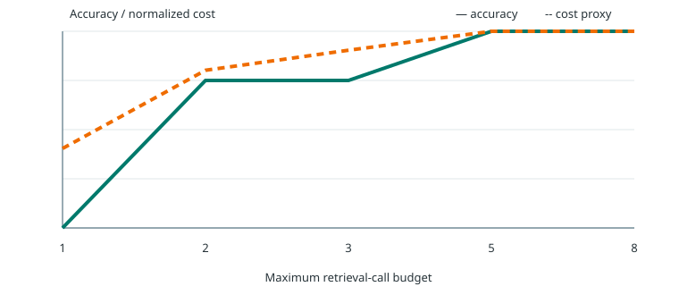

Controlled agent evaluation · E4 / E5 / E6
从“搜一次”到“知道还缺什么”
8 个冻结的合成金融问题，验证结构化证据槽、回答/拒答闸门，以及检索预算的收益递减。所有结果都由仓库脚本生成，不调用外部 LLM。
100.0%E4 structured planner accuracy
100.0%E5 correct abstention
5 callsE6 first 100% budget
E4 · Structured Gap Planner
问题先编译成证据槽，再逐槽检索
对照组是原问题单次检索和 query rewrite；实验组显式列出公司、指标、期间、单位及计算操作，并只为尚未满足的槽继续检索。
| Method | Accuracy | Slot recall | Search calls | Cost proxy |
|---|---|---|---|---|
| plain_one_shot | 75.0% | 93.8% | 1.00 | 219 |
| query_rewrite | 75.0% | 93.8% | 1.00 | 219 |
| structured_gap_planner | 100.0% | 100.0% | 2.50 | 384 |
E5 · Sufficiency Gate
缺证据或证据冲突时，拒答也是正确行为
每个问题派生 complete / partial / empty / conflict 四种证据条件。闸门只在全部槽具备同期间、同单位、时间可见且无冲突的 final 证据时放行。
| Policy | Answer coverage | Correct abstention | Unsupported answers | False abstention |
|---|---|---|---|---|
| must_answer_baseline | 75.0% | 33.3% | 66.7% | 0.0% |
| sufficiency_gate | 25.0% | 100.0% | 0.0% | 0.0% |
“Unsupported answers”指在本应拒答的 partial、empty 或 conflict 条件下仍回答；不是通用 LLM 幻觉率。
E6 · Budget Sweep
充分即停，预算上限不等于实际消耗
扫描 1 / 2 / 3 / 5 / 8 次最大检索调用。两槽问题在 2 次停止，四槽问题在 4 次停止，因此更高预算不再增加成本。

| Budget | Accuracy | Slot recall | Actual calls | Cost proxy | Early stop |
|---|---|---|---|---|---|
| 1 | 0.0% | 43.8% | 1.00 | 155 | 0.0% |
| 2 | 75.0% | 87.5% | 2.00 | 308 | 0.0% |
| 3 | 75.0% | 93.8% | 2.25 | 346 | 75.0% |
| 5 | 100.0% | 100.0% | 2.50 | 384 | 100.0% |
| 8 | 100.0% | 100.0% | 2.50 | 384 | 100.0% |
Cost proxy 是固定公式（每次检索 120 + 文档词数×4），用于相对比较，不代表 API token 账单或线上延迟。